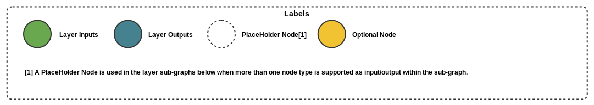
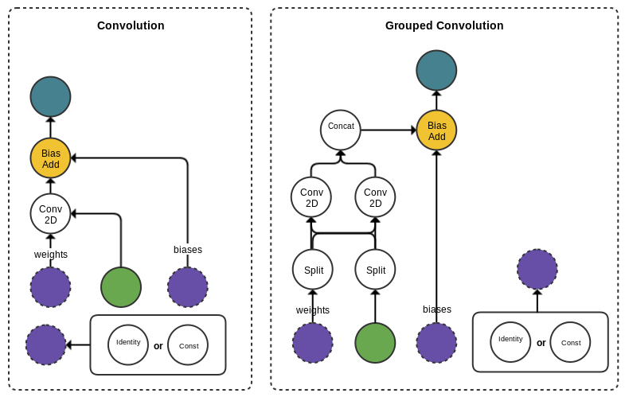

Tensorflow Graph Compatibility¶
Layer to Graph Node Compatibility
The sections below describe what topologies of Tensorflow graph operations are compatible with each of the Qualcomm® Neural Processing SDK supported layers.

Batch Normalization
Convolution

Concatenation
Deconvolution/Transposed Convolution
ElementWise Sum/Mul/Max
Fully Connected
Local Response Normalization
Pooling Avg/Max
Sigmoid/Relu/TanH/Elu
SoftMax
PReLu

Slice
Reshape